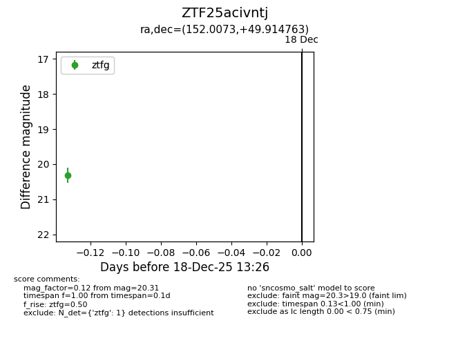
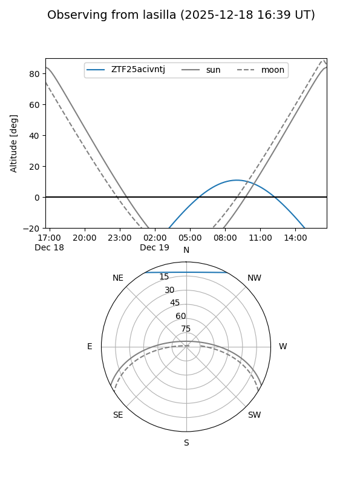
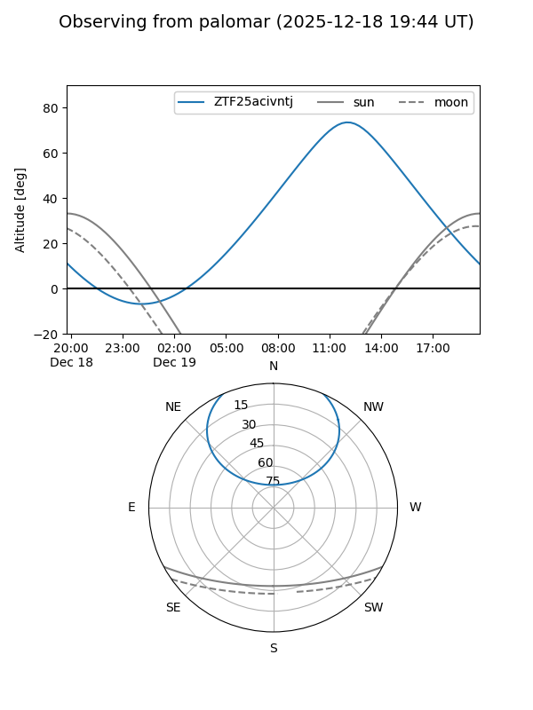

ZTF25acivntj
Target ZTF25acivntj at 2025-12-18 13:27
Aliases and brokers:
FINK: fink-portal.org/ZTF25acivntj
Lasair: lasair-ztf.lsst.ac.uk/objects/ZTF25acivntj
ALeRCE: alerce.online/object/ZTF25acivntj
alt names
ZTF25acivntj (ztf,fink_ztf)
Coordinates:
equatorial (ra, dec) = 152.0073,+49.91476
equatorial (HMS+DMS) = 10:08:01.75,+49:54:53.15
galactic (l, b) = (165.4837,+51.47627)
Photometry
last ztfg=20.31
1 ztfg detections
Lightcurve

Visibility


Additional plots